The battery energy storage landscape is rapidly evolving, with two competing but complementary deployment paradigms reshaping how utilities, developers, and grid operators approach grid modernization. Understanding the technical, economic, and operational distinctions between distributed BESS clusters and centralized megawatt-scale battery systems is essential for stakeholders navigating today's energy transition. This analysis explores both architectures, their respective advantages, current market trends, and optimal use cases.
Understanding the Two Paradigms
Centralized megawatt-scale BESS represents utility-scale storage systems typically ranging from 100 MW to several GW in capacity, connected at transmission or sub-transmission levels. These monolithic installations concentrate battery capacity at single locations, serving broad grid functions including bulk energy storage, system-wide frequency regulation, and transmission support. Projects like NTPC's 4,000 MWh Thermal Stations BESS across multiple Indian locations exemplify this approach, combining massive capacity with standardized control and operational management.
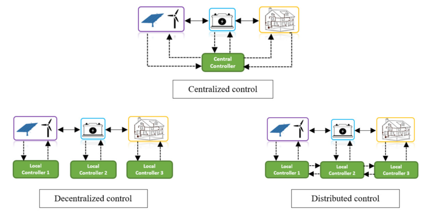
Distributed BESS clusters, by contrast, comprise smaller modular systems deployed strategically across distribution networks, typically ranging from rooftop installations to community-scale systems of 10–50 MW. These units remain closer to consumption centers, enabling localized energy management while maintaining grid connectivity. Rather than centralizing all storage at a single point, distributed architectures leverage multiple smaller installations coordinated through advanced software platforms.
Technical Architecture and Control Systems
The technical differences between these approaches have profound implications for system design and operational complexity.
Centralized systems employ a single Power Conversion System (PCS) managing all battery modules through centralized control logic. This architecture simplifies oversight and coordination but creates a potential single point of failure. Battery Management System (BMS) functions are consolidated at the system level, with all sensing and control flowing through central processing units. Communication is streamlined, as all components report to one master control unit.
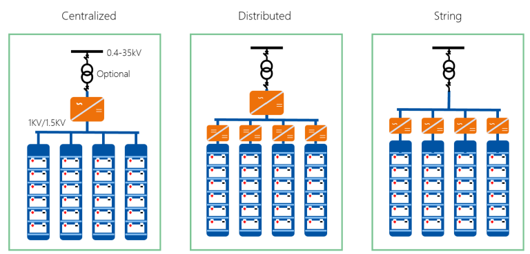
Distributed systems employ a fundamentally different paradigm: each battery module is equipped with its own PCS and local control unit (LCU), creating what researchers term a "decentralized BMS" architecture. Each unit independently monitors voltage, current, and temperature while communicating with peer nodes through networked protocols like CAN (Controller Area Network) bus systems. This distributed approach eliminates the single point of failure inherent to centralized designs—if one-unit malfunctions, the others continue operating. Adding or removing battery modules after installation requires minimal hardware or software modification, enabling true plug-and-play scalability.
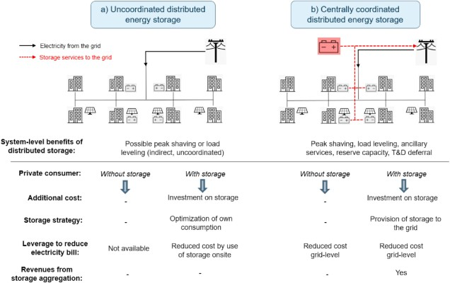
For control, distributed systems employ sophisticated coordination strategies. Rather than relying on a central master, nodes use leader-election algorithms where temporary master designation rotates among units. This design ensures that if the current coordinator fails, another node automatically assumes the role without system-wide collapse. The tradeoff is increased complexity in communication protocols and synchronization logic, requiring more sophisticated software frameworks.
Thermal Management and Operational Challenges
Thermal management becomes increasingly complex at scale, and the two architectures handle this challenge differently.
Centralized systems often employ advanced liquid-cooling approaches—the dominant cooling method for large BESS installations. Coolant circulates through battery modules, absorbing heat and maintaining temperature uniformity essential for extended lifespan and safety compliance. Liquid cooling excels at high power density but requires careful design to prevent leaks and ensure maintenance accessibility. These systems integrate cooling into the overall architecture from inception, enabling precision control but increasing design complexity and upfront costs.
Distributed systems can employ more flexible cooling strategies. Smaller modular units may use air cooling or simpler liquid-cooling architectures tailored to each unit's size and duty cycle. This modularity allows thermal management to scale proportionally—a 5 kWh wall-mounted unit might use passive air cooling, while larger cluster nodes implement localized liquid cooling. The result is potentially lower per-kWh cooling costs but requires more distributed monitoring and maintenance infrastructure.
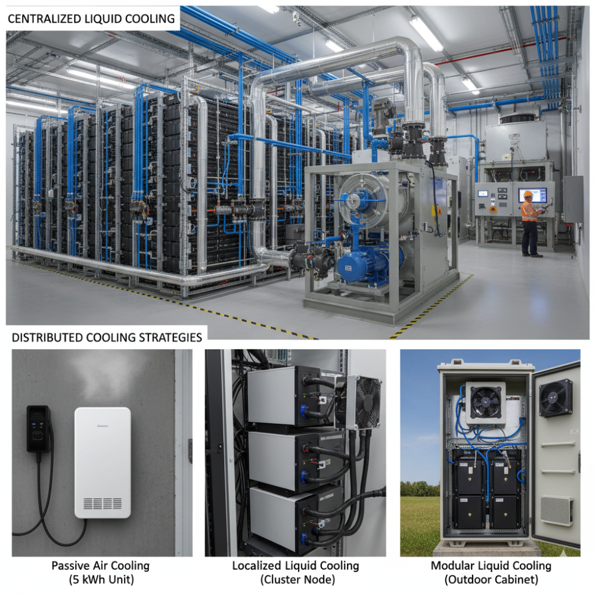
Economic Dynamics and Scale Advantages
Capital costs reveal striking differences between the approaches.
Centralized systems benefit from pronounced economies of scale. A single 250 MW/500 MWh BESS project can be engineered, procured, and deployed more cost-effectively per megawatt than 25 separate 10 MW installations. This advantage stems from shared infrastructure—one major grid interconnection points rather than multiple; consolidated electrical design reducing materials; unified control systems; and standardized manufacturing benefiting from volume production.
Recent market data illustrates this principle. India's 2024–2025 projects show centralized systems achieving tariffs as low as ₹4.34–4.57 lakh per MW per month (approximately $50–55 USD per kW per month), with some projects achieving 55% tariff reductions versus earlier benchmarks. These economics rely on large, aggregated capacity justifying specialized engineering and procurement efforts.
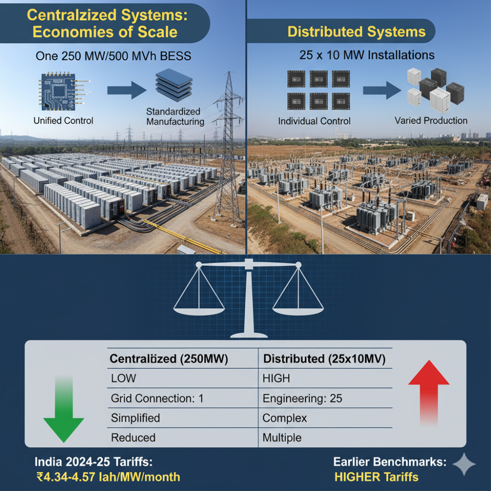
Distributed systems counter this with different economic strengths. Rather than high upfront capital amortized across large capacity, they offer lower initial entry barriers—a developer can deploy 5–10 MW of storage without committing to 100+ MW infrastructure. Per-kilowatt costs for modular units are higher, but total project capital expenditure is proportionally smaller. Additionally, distributed systems defer major transmission and distribution network upgrades. By placing storage near congestion points, utilities avoid or delay costly infrastructure reinforcement—a phenomenon termed infrastructure deferral. This benefit is economically quantifiable; distributed BESS can defer transmission upgrades with net present value comparable to centralized storage in specific grid locations.
Grid Services and Operational Benefits
The value proposition differs markedly based on deployment location and intended services.
Centralized systems excel at system-wide services:
Bulk renewable energy shifting—storing multi-hour surplus solar or wind generation during production peaks and discharging during evening peak demand or nighttime hours. The 250 MW/500 MWh Fort Bend County BESS in Texas and Germany's Southern Swabia 40 MW/90 MWh system exemplify this role.
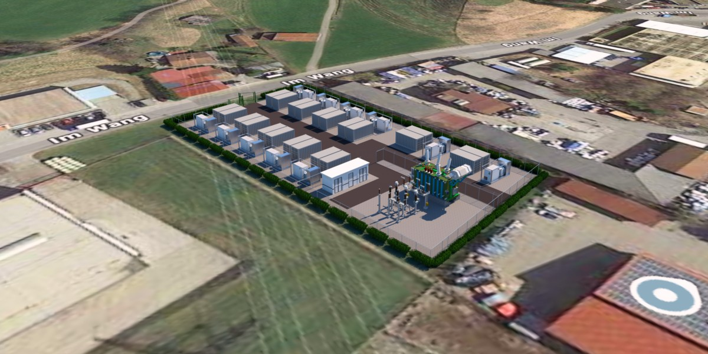
Frequency regulation at transmission scale, where centralized BESS can respond to system-wide frequency deviations within milliseconds. Their large capacity enables stabilization of entire interconnections during rapid renewable fluctuations.
Capacity firming for massive renewable plants, particularly co-located solar and wind installations where centralized storage buffers intermittency for PPAs guaranteeing firm capacity.
Distributed systems provide localized services:
Voltage support and power quality improvement at distribution level, where smaller BESS inject or absorb reactive power to maintain voltages within acceptable ranges during high renewable penetration periods. India's Kilokari project—a 20 MW/40 MWh distribution-level system in New Delhi—directly addresses this, serving over 12,000 customers while improving voltage stability.
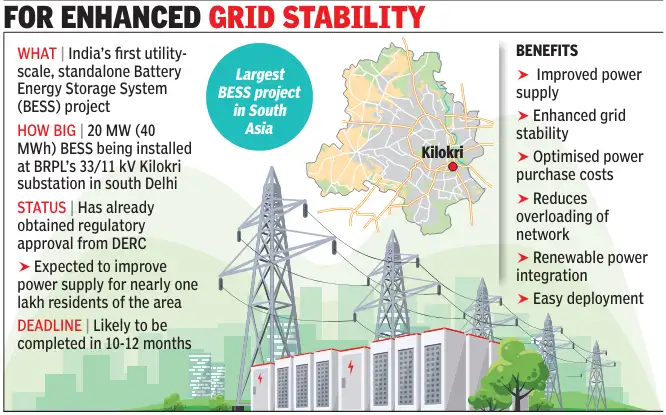
Peak shaving and demand charge reduction for customers and distribution operators. By discharging during local peak periods, distributed BESS reduces strain on local transformers and feeder lines, potentially avoiding costly upgrades.
Transmission and distribution loss reduction. Storing energy near consumption centers minimizes long-distance transmission, where India faces high technical and commercial losses (T&D losses exceed 20% nationally). Distributed storage can save billions annually by reducing transported energy volumes.
Renewable Integration and Virtual Power Plants
An emerging paradigm bridges both approaches: Virtual Power Plants (VPPs) that aggregate distributed BESS into grid-scale portfolios.
VPPs employ sophisticated software to monitor and remotely dispatch multiple distributed storage units in real-time, creating coordinated response to grid needs. Rather than deploying 1,000 MW at a single site (logistically challenging and grid-constraining), a VPP might coordinate 100 separate 10 MW installations spread across a region, each providing local services while contributing to grid-scale stability objectives.
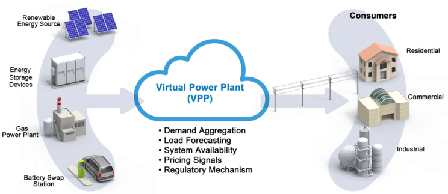
The technical advantages are substantial:
Advanced forecasting algorithms predict local demand and renewable generation, optimizing dispatch across the portfolio to capture highest-value trading opportunities on wholesale markets. The distributed nature allows responsive local control—some units discharge to serve local peaks while others charge during export windows, maximizing overall efficiency.
Resilience through distributed architecture—no single failure cascades through the system. Weather impacts, equipment failures, or maintenance outages affect individual nodes without degrading system-wide services.
The regulatory evolution supports this model. Multiple regions now explicitly recognize VPPs as grid assets eligible for market participation and grid service compensation.
Siting, Permitting, and Development Timelines
Real estate and regulatory pathways diverge significantly.
Centralized systems require identification of single sites with substantial available land (often 2–5 acres for multi-hundred MW capacity), suitable soil conditions, and grid interconnection capability. This concentration simplifies environmental permitting—one site means one environmental review—but also creates concentrated opposition risk and land-acquisition challenges in densely populated regions. Permitting timelines can stretch 2–3 years due to comprehensive grid impact studies required for large injection points.
Distributed systems distribute land requirements across multiple locations, potentially utilizing rooftops, underutilized sites, or collocated renewable installations. This fragmentation complicates permitting (multiple smaller approvals rather than one large one) but may reduce community opposition by spreading infrastructure impact. Deployment can be more rapid—individual 10 MW sites may achieve permitting within 12–18 months, enabling phased rollout without awaiting complete buildout.
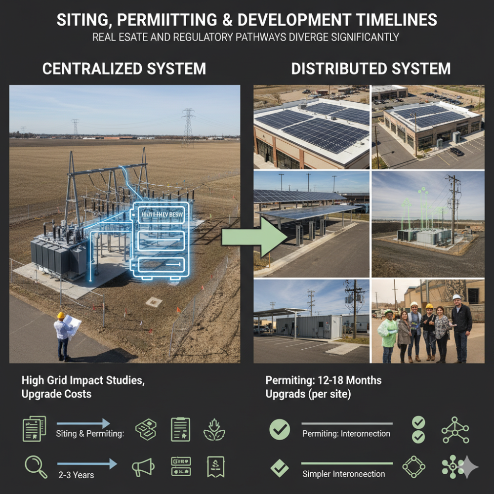
Interconnection complexity differs meaningfully. A 1,000 MW centralized BESS requires comprehensive Transmission System Impact Studies, potentially triggering system upgrades. Distributed units connecting at distribution level often face simpler interconnection studies and lower network upgrade costs.
Current Market Deployment Trajectories
Global BESS deployment accelerated dramatically in 2024, with 205 GWh installed globally—a 53% year-over-year increase. This growth illuminates emerging deployment patterns:
China's approach emphasizes centralized systems at massive scale. China accounted for 67% of 2024 global BESS deployments, driven by provincial-level mandates requiring renewable projects to integrate storage. Provincial requirements effectively mandate large co-located systems, driving centralized architectures. Notably, 11 projects exceeding 1 GWh capacity entered operation in China alone in 2024.
India's emerging strategy favors a hybrid model. The country deployed 341 MWh in 2024 (a sixfold increase from 2023) with large centralized projects dominating the pipeline: NTPC's 4,000 MWh across 11 thermal plant sites; ReNew's 2,000 MWh hybrid project; and multiple 500 MWh standalone systems. Simultaneously, distribution-level projects like the 20 MW/40 MWh Delhi Kilokari BESS are establishing distributed deployment models, with policy recommendations favoring hybrid strategies that deploy both centralized systems for renewable integration and distributed systems for transmission deferral and grid resilience.
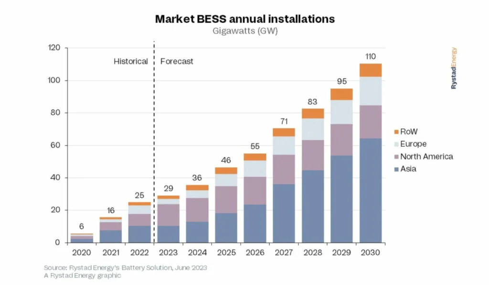
United States and Canada show mixed patterns. The US grid experienced strong growth with nearly 40 GWh installed in 2024, with project duration increasing to average 3+ hours in 2024 versus shorter durations in prior years, reflecting shifting economics toward longer energy-shifting applications. Approximately 40% of US BESS remains co-located with renewables, though independent merchant BESS projects increasingly dominate new development.
European developments emerging across Central and Eastern Europe, driven by regulatory frameworks and renewable integration targets, showing early preference for distributed architectures aligned with distribution-level grid support requirements.
Regulatory and Market Structure Influences
Policy frameworks are actively shaping deployment choices.
India's regulatory evolution exemplifies this dynamic. The 2025 Ministry of Power guidelines permit states flexibility in standalone BESS configurations (2-hour or 4-hour durations), removing prescriptive mandates that favored specific architectures. However, co-located BESS projects receive exemptions from Inter-State Transmission System (ISTS) charges, incentivizing centralized deployment with renewables. Distribution-level BESS participation in ancillary services markets is now explicitly permitted, creating revenue pathways that justify distributed deployment.
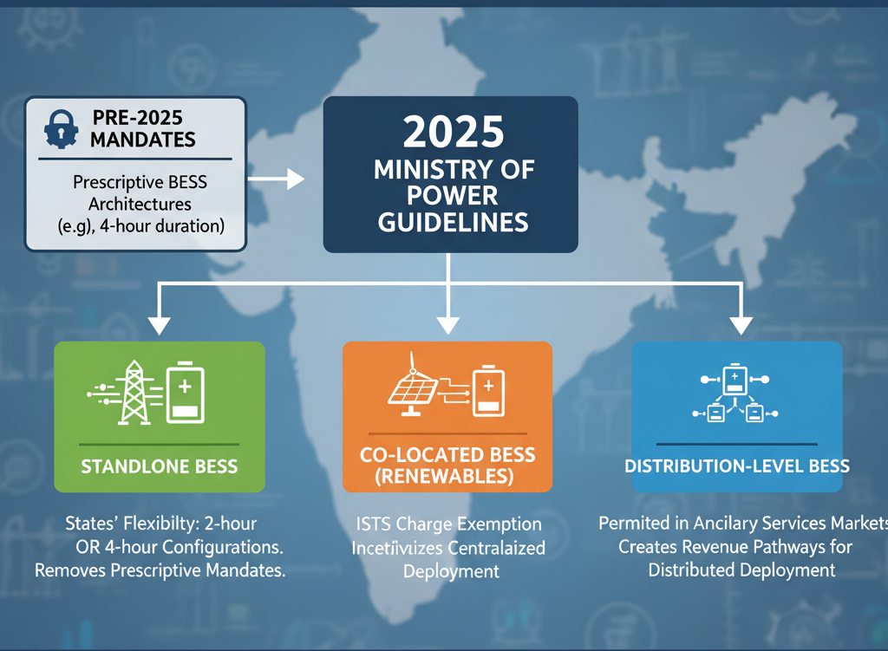
US market reforms reflected in the 2022 Inflation Reduction Act provided 30% investment tax credits for standalone storage projects, encouraging independent merchant BESS regardless of scale. This policy neutral stance has supported both centralized and distributed architectures competing on merit.
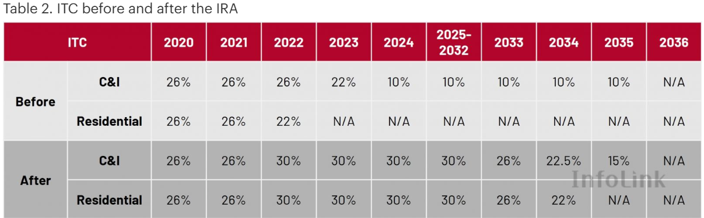
Chinese mandates requiring renewable projects to integrate storage equal to 20% of generation capacity (with 2–4 hour minimums) effectively drive co-located centralized deployment, though recent policy shifts toward storage leasing create openings for independent distributed providers.
Strategic Deployment Considerations
Optimal BESS deployment architecture depends on specific regional and operational contexts:
Centralized systems best suit scenarios where:
Large-scale renewable integration requires bulk energy shifting—regions with massive solar or wind buildout need multi-GWh capacity to smooth multi-hour generation variability. Transmission-level grid services and system stability are primary value drivers rather than local distribution support. Land availability exists at viable interconnection points without excessive acquisition costs. Regulatory frameworks incentivize or mandate co-location with renewable generation.
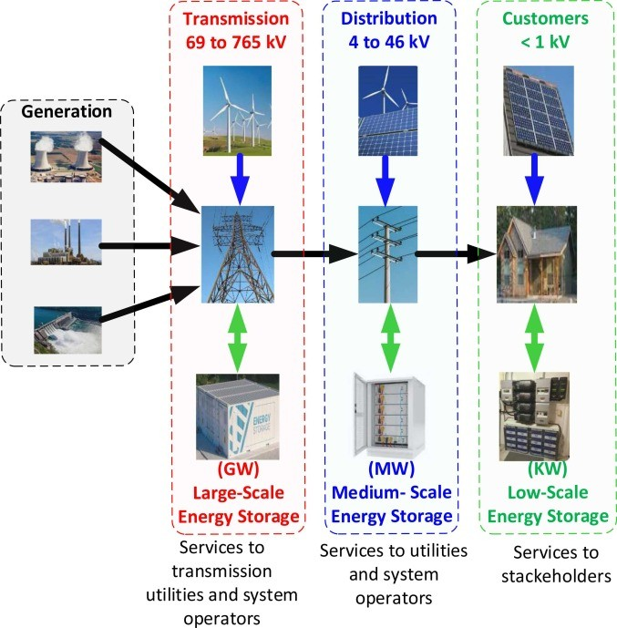
Distributed systems excel in scenarios where:
High transmission and distribution losses create economic justification for localized storage and reduced transmission distance. Distribution network constraints or peak load management drive infrastructure deferral benefits. Retail or commercial customers seek peak shaving and demand charge reduction—behind-the-meter and distribution-level applications. Multiple smaller land parcels are more readily available than large centralized sites. Regulatory frameworks permit distribution-level market participation and compensate voltage/frequency support services.
The Emerging Hybrid Future
The global trend increasingly points toward complementary deployment rather than either/or competition. India's recommended strategy exemplifies this: near-term priority for distribution-level BESS addressing immediate transmission losses and customer needs, coupled with long-term development of centralized systems at major renewable corridors. Virtual Power Plants aggregating distributed assets create effectively centralized services from distributed infrastructure.
As global BESS capacity grows from today's ~55 GWh cumulative installations toward projected 400+ GWh annual additions by 2030, this hybrid architecture—anchored by centralized transmission-level systems, enriched with distributed clusters providing localized services and coordinated through VPP software platforms—represents the likely evolution of grid-scale energy storage infrastructure.